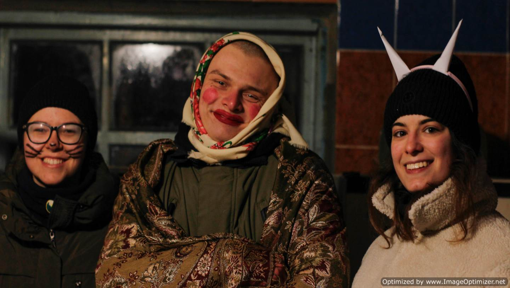
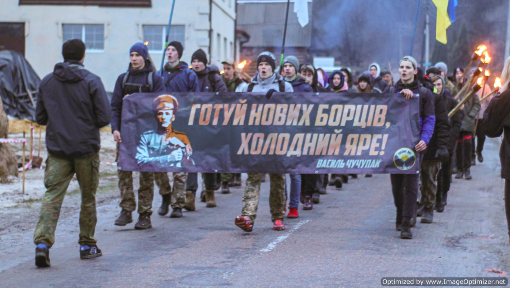
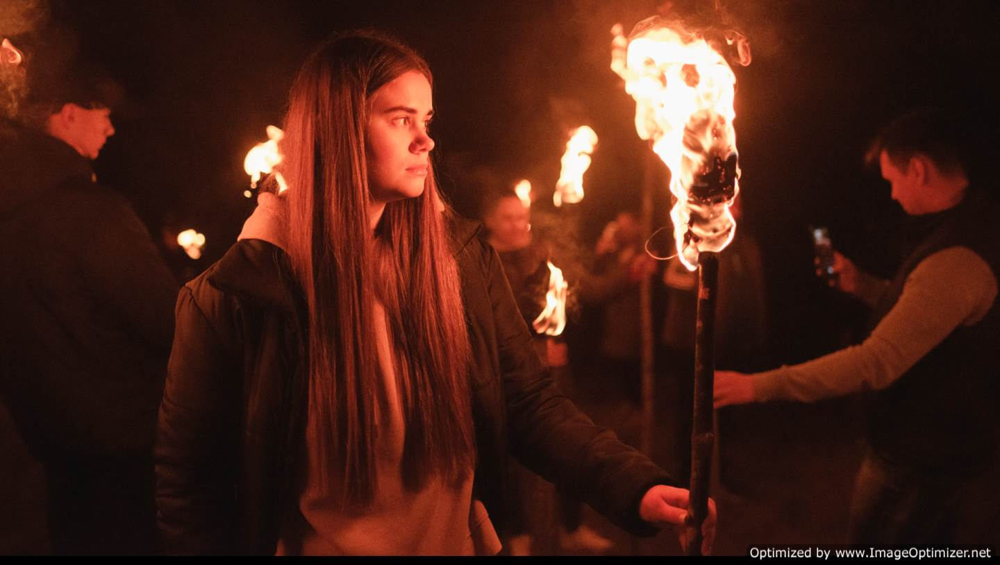
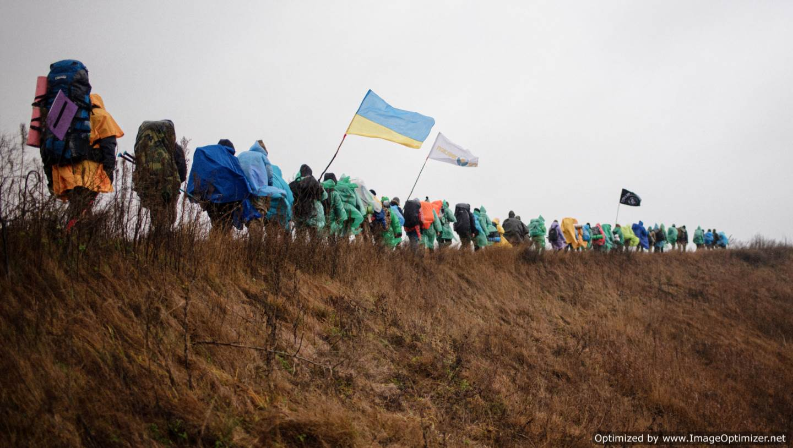

ЗАХОДИ
-
щедруй для захисників
13.01.2023
ЗареєструватисьРіздвяні свята. Теплі будинки та багаті столи. З 2014 року не всі можуть так святкувати. Новий рік, Різдво, Щедрий вечір наші воїни проводять на передовій. Без них не було б ні свободи, ні свята, ні України.
🔥"Щедруй для захисників!" - це спосіб потішити щедрівками українських господарів та господинь, водночас збираючи гроші на підтримку Збройних Сил України. Ми можемо спокійно святкувати завдяки їхній цілодобовій праці. То чому б не поєднати приємне з корисним, підтримавши наших захисників.

-
смолоскипна хода ім. в. чучупаки
13.01.2023
Зареєструватись"Готуй нових борців, Холодний Яре!" — останній заклик головного отамана Василя Чучупаки. Він вигукнув ці слова за мить до своєї загибелі зі щирою вірою у їх пророчий зміст.
Щорічно ми гучно заявляємо, що пам'ятаємо нашого Героя, який у свої 25 років брав відповідальність за тисячі українських повстанців✊
Смолоскипи на вечірньому тлі Холодноярського лісу символізують новий вогонь, що несе в серцях покоління української молоді, яке буде брати відповідальність за Державу. Як колись її брав на себе отаман Василь Чучупак!

-
покрова в холодному яру
13.01.2023
Зареєструватись"Запали новий вогонь!" - коротке і чітке гасло свята Покрови в Холодному Яру.
Ми відновлюємо вогняний запал Дня козацтва, Дня УПА, Дня Захисника України та і загалом свята всіх патріотів і націоналістів.
Сакральна місцевість Холодного Яру в поєднанні з чудовими людьми, що запалюють сотні смолоскипів у вигляді живої карти України🔥
Таким чином, Холодний Яр символічно пробуджує новий вогонь героїчного минулого та сильного майбутнього.

-
зимовий похід
13.01.2023
ЗареєструватисьГрудень 1919 року поклав початок відомому Зимовому походу Армії УНР. У ньому брав участь Юрій Горліс-Горський, який лишився в Холодному Яру, щоб підлікуватись. Його вразила висока національна свідомість тутешніх селян, вміння захищати себе, традиція вітання "Слава Україні".
У Холодному Яру він знайшов "клаптик української землі, який потрібно було відстояти або померти".Тож по цьому "клаптику української землі" на честь Юрія і за його спогадами наша ватага протоптує зимові холодноярські стежки щорічно.
Медведівка, старий млин, Семидубова гора, Головківка з краєвидами на Атаманський парк, місце останнього бою Василя Чучупаки, древній Мотрин монастир, тисячолітній Дуб Залізняка — це далеко не повний перелік локацій, які оживають перед мандрівниками. Підкріплені красою засніженого Яру, вони довершують дивовижність цього величного місця, що дихає історією.
